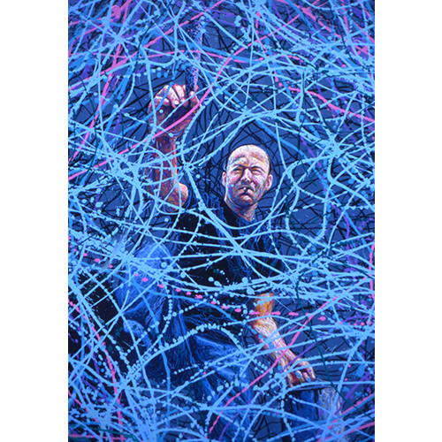

Exhibitions
Revisionist Modernism, The Museum of Contemporary Art, Washington, DC, US, December 2, 1994–January 1, 1995.

Revisionist Modernism, The Museum of Contemporary Art, Washington, DC, US, December 2, 1994–January 1, 1995.